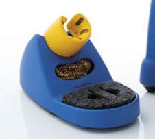

Soldering
Basics
How Solder Works

- Wetting
- When hot enough solder forms alloy with pin & pad
- Attracts to hottest part
Good Solder Joints
- Use correct amount of solder
- Cold joint: solder did not melt completely
- Ensure solder completely bonds with pin and pad (wetting)
Tools
| Soldering Iron | Hot Air Gun | Reflow Oven |
 |
 |
 |
- Flux
- Remove oxides to allow better solder connections
- Tweezers
- Hold small components when soldering
Soldering With Iron
Safety
- Hold the iron like a pencil
- Entire metal end gets hot (don't touch)
- Always assume iron is hot
- When not in use put back in holder

Main Tools
| Solder | Sponge & Brass Sponge | Flux |
 |
 |
 |
| What you are melting | How you clean your iron | Removes oxides |
Other Tools
- Iron tips

- Bigger tips, more heat
- Smaller tips, more precision, easier to break
- Exhaust Fan
- Filter fumes while working
- Desoldering wick
- Copper mesh to remove solder
- Desoldering pump
- Pump to suck solder out of holes
How to Heat the Parts

- Touch the iron to pad and the pin so both heat
- Apply solder to the pad and pin, not the iron
- Pull solder away before iron
How Much Solder to Apply
- Enough to fully cover pad, but not so much to look like a bubble
Through Hole Soldering


- Bend pins slightly outward to hold in place
- Touch iron to pin and pad to head
- Apply solder to opposite side of pin (so you are not applying solder to the iron)
- Clip excess on pins when done soldering
Surface Mount Soldering


- Apply solder to one pad (a corner if many pins)
- Place component (with tweezers) and solder first pin to pad with solder
- Solder pin on opposite corner then solder all other pins
Cleaning Your Iron

- Wet sponge and brass sponge to clean solder from iron
- Wet sponge cools iron (have to wait for heat back up)
- Do not hold iron on wet sponge for extended time (could cause damage)
- Tin the iron when done soldering
- Clean tip, cover tip in solder, clean again
- Prevents oxidation and corrosion
Soldering With Hot Air Gun
Safety
- Air coming out of hot air gun is very hot
- Do not set temperature above 400ºC
- Can cause damage to parts
- Make sure all parts on your board can handle heat (many connectors cannot and will melt)
- Turn off before putting back in holder
Tools
- Hot air gun
- Wire rack to place board on (so you don't burn the table)
- Solder paste
- Small beads of solder held together with flux

Applying Solder Paste


- Apply small amount of solder paste to all pads of component
- Solder will attract to pads so don't have to be exact
- Use tweezers or syringe to make sure paste is spread evently over pads
- Place component on top of solder paste
- For complex boards stencils exist to help place paste
Heating the Component

- Turn on and flip switch to reworking state
- Set temperature to ~340ºC and airspeed to ~66
- Hold tip a distance away to slowly heat up the part
- Bring tip closer and heat all pads evenly until all is melted
- Flip switch to cool down and hold tip at component until hot air gun turns off
Soldering With Reflow Oven
Safety
- Oven gets hot, be careful touching when on
- Make sure all components you put in oven can stand the heat (many connectors will melt)
Tools
- Reflow oven
- Solder paste
- Using solder paste the same way as with hot air
Using the Oven

- Apply solder paste to board same as in hot air
- Typically apply solder paste to all of board and place all components before putting into oven
- This is where stencils are more commonly used
- Place board on center of tray and close the oven
- Select correct solder profile wave (varies on type of solder paste being used)
- Start the execution and wait until done (beeps then hit S)
Other Resources
- EEVBlog: Soldering
Overview